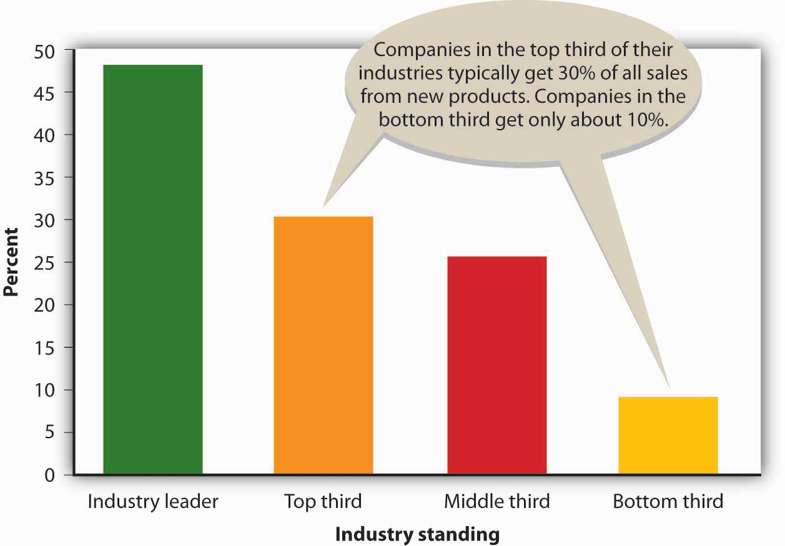

For some people, coming up with a great product idea is a gratifying adventure. For most, however, it’s a daunting task. The key to coming up with a product idea is identifying something that customers want—or, perhaps more important, filling an unmet customer need. In coming up with a product idea, ask not “what do I want to sell?” but rather “what does the customer want to buy?”Scott Thurm and Joann S. Lublin, “Peter Drucker’s Legacy Includes Simple Advice: It’s All about the People,” Wall Street Journal (November 14, 2005, B1, http://home.ubalt.edu/tmitch/641/WSJ_com%20-%20Peter%20Drucker%27s%20Legacy.htm (accessed October 29, 2011). With this piece of advice in mind, let’s get back to the task of coming up with a product idea. Nobel Prize–winning chemist Linus Pauling suggested that “the best way to have a good idea is to have lots of ideas,” and though this notion might seem a little whimsical at first, it actually makes a lot of sense, especially if you’re trying to be innovative in the entrepreneurial sense. Every year, for example, companies launch about thirty thousand new food, beverage, and beauty products, and up to 90 percent fail within a year.“New Product Launch Program,” Catalina, http://www.catalinaconnections.com/products/new_product_launch.html (accessed October 30, 2011); Philip Kotler and Gary Armstrong, Principles of Marketing, 12th ed. (Upper Saddle River, NJ: Pearson Education, 2008), 253. You might need ten good ideas just to have one that stands a chance.
So where do these ideas come from? Product ideas can originate from almost anywhere. How many times have you looked at a product that just hit the market and said, “I could have thought of that”? Just about anybody can come up with a product idea; basically, you just need a little imagination. Success is more likely to result from a truly remarkable product—something that grabs the attention of consumers. Entrepreneur and marketing consultant Seth Godin refers to truly remarkable products as “purple cows.”Seth Godin, Purple Cow: Transform Your Business by Being Remarkable (New York: Penguin Group, 2003). He came up with the term while driving through the countryside one day. As he drove along, his interest was attracted by the hundreds of cows dotting the countryside. After a while, however, he started to ignore the cows because looking at them had become tedious. For one thing, they were all brown, and it occurred to him that a glimpse of a purple cow would be worth writing home about. People would tend to remember a purple cow; in fact, they might even want one.
Who thinks up “purple cow” ideas? Where do the truly remarkable business ideas come from? As we pointed out in an earlier chapter, entrepreneurs and small business owners are a rich source of new product ideas (according to the Small Business Administration, 55 percent of all new product innovations come from small businesses). Take Dean Kamen, inventor of the Segway Human Transporter, a battery-operated vehicle that responds to the rider’s movements: lean forward and you can go straight ahead at 12.5 miles per hour; to stop, just tilt backward. This revolutionary product is only one of Kamen’s many remarkable business ideas. He invented his first product—a wearable infusion pump for administering chemotherapy and other drugs—while he was still a college undergraduate.See “Discover the Segway HT Revolution,” Segway, http://www.segway.com/segway (accessed October 29, 2011); “Segway HT,” The Great Idea Finder, http://www.ideafinder.com/history/inventions/story089.htm (accessed May 11, 2006). Jacob Dunnack is also getting an early entrepreneurial start. At age six, Jacob became frustrated one day when he took his baseball bat to his grandmother’s house but forgot to take some baseballs as well. His solution? A hollow baseball bat that holds baseballs. Dunnack’s invention, now called the JD Batball, was quickly developed and sold in stores such as Toys “R” Us.See “The JD Batball,” The Great Idea Finder, http://www.ideafinder.com/history/inventions/jdbatball.htm (accessed October 29, 2011); “Molds Designer Uses SolidWorks Software to Make 8-Year-Old’s Dream a Reality,” SolidWorks Express, http://www.solidworks.com/swexpress/jan/200201_feature_04.html (accessed October 29, 2011).
Why do so many entrepreneurs and small businesspeople come up with so many purple cows? For one thing, entrepreneurs are often creative people; moreover, they’re often willing to take risks. This is certainly true of Bob Montgomery, inventor of the PowerSki Jetboard (which undoubtedly qualifies as a purple cow). With more than twenty years’ experience in the water-sports industry and considerable knowledge of the personal-watercraft market, Montgomery finally decided to follow his long-cherished dream of creating an entirely new and conceptually different product—one that would offer users ease of operations, high performance, speed, and quality. His creative efforts have earned him the prestigious Popular Science “Best of What’s New” award.“Awards and Media,” PowerSki Jet boards, http://www.powerski.com/content/psi_index.php (accessed October 29, 2011).
To remain competitive, medium and large organizations alike must also identify product development opportunities. Many companies actively solicit product ideas from people inside the organization, including marketing, sales, research, and manufacturing personnel, and some even establish internal “entrepreneurial” units. Others seek product ideas from outside the organization by talking to customers and paying attention to what the competition is doing. In addition to looking out for new product ideas, most companies constantly seek out ways to make incremental improvements in existing products by adding features that will broaden their consumer appeal. As you can see from Figure 10.2 "Sales from New Products", the market leaders in most industries are the firms that are most successful at developing new products.
Figure 10.2 Sales from New Products
A novel approach to generating new-to-the-world product ideas is hiring “creativity” consultants. One of the best is Doug Hall, who’s been called “America’s Number 1 Idea Guru.” At a Cincinnati idea factory called Eureka!Ranch, Hall and other members of his consulting firm specialize in helping corporate executives get their creative juices flowing.See Eureka!Ranch at http://www.eurekaranch.com, (accessed October 29, 2011). Hall’s job is getting people to invent products that make a real difference to consumers, and his strategies are designed to help corporate clients become more innovative—to jump-start their brains. As Hall puts it, “You have to swing to hit home runs.”“Success Calls for Creativity,” CNN Money, February 4, 1997, http://money.cnn.com/1997/02/04/busunu/intv_hall (accessed October 29, 2011). Eureka!Ranch’s client list includes Disney, Kellogg, Johnson & Johnson, and Procter & Gamble, as well as a number of budding entrepreneurs. Hall boasts that the average home uses eighteen goods or services that the Ranch helped shape, and if he’s right, you yourself have probably benefited from one of the company’s idea-generating sessions.“Why Eureka,” Eureka!Ranch, http://eurekaranch.com/ (accessed October 29, 2011).
(AACSB) Analysis
The “Strange New Products” Web site brags that it displays the “weirdest, funniest, stupidest, and [most] ingenious new products entering the marketplace.” This seems to be an accurate statement. Visit the site (http://www.strangenewproducts.com) and do the following: